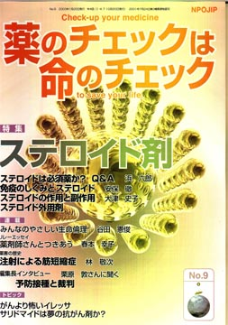

No.9 特集 ステロイド剤 2003年3月 第2刷発行
ジキル博士とハイド氏
ステロイドは本当に魔法のような薬です。赤く腫れあがり痛んでいた関節や皮膚の赤みがみるみるうちに消えて腫れが引き痛みも徐々におさまってきます。リウマチや腎臓病のネフローゼなど慢性の炎症を起こす難病で非常に苦しんでいた人は、ステロイドの使用で一息つけるようになります。
都合の良い面だけを見ていると、ステロイドは奇跡を起こす薬のように思えます。しかし残念ながら、害の方も数え上げればきりがないくらいです。大量に使用すると悪い面だけが目立つものもあります。
つまり、ステロイドは、よい面と悪い面を持っている「両刃の剣」「ジキルハイド賞」の筆頭といえます。中には「デビルピル」に相当するものもあります。
今回は、この「ステロイド」について考えてみましょう。
もくじ
■メッセージ
川田 龍平氏 （龍平学校PEEK代表、東京HIV訴訟原告）
特集
■ステロイドは必須薬か？ Q&A
■免疫のしくみとステロイド
番外編１：サプリメントと称するホルモン剤
番外編２：マイリスは不要・危険！
■ステロイドの作用と副作用
■ステロイド外用剤
連載
■リレーエッセイ 薬剤師さんとつきあう
■みんなのやさしい生命倫理 ９
日本の生命倫理の歴史（1）神世から平安時代
■薬害の歴史（５） 注射による筋短縮症
■編集長インタビュー
栗原敦さんに聞く 予防接種と裁判
■映画の中のクスリ（３） 喘息の治療薬
■Coffee無礼区
トピック
■１ がんより怖いイレッサ
■２ サリドマイドは夢の抗がん剤か？
■第３回医薬ビジランスセミナー報告 １
これが日本の必須薬！
提言
■NPOJIPの提言
薬のチェックを企業にまかせる新法人の設置が決定
■書評
・『図説 国民衛生の動向２００２』
・『患者よ、がんと闘うな』
■NPOJIPおよび関連の出版物案内・申込用紙
■編集後記
病院でよく聞く言葉
（特集にちなんだ言葉を簡潔に解説）忙しい人はまずここから
○炎症 −傷ついた体を修復する
○免疫 −異物から体を守る
○ステロイド −効き目強力だが、副作用も強い
○インフルエンザワクチン −効果は疑問
○インフルエンザ −大流行するのはA型
○インフルエンザ治療 − 解熱剤を使わず、安静に
○ワクチンの害 − 患者が減少すると顕著に
（日本経済新聞に浜六郎が掲載していたものを改変。加筆、新しく追加したものを含む）
トピックより
がんより怖いイレッサ
肺がん用抗がん剤「イレッサ」の害が大きく報道されています。イレッサは前評判がとにかくすごかった。全く承認もしていない、申請も出していないのに、2001年10月頃から医学関係の新聞（写真は2001年10月25日の記事）や雑誌で特集記事が組まれました。そして承認後はテレビ番組でも「夢の新薬」であるかのように紹介されました。承認された適応症は「手術不能又は再発非小細胞性肺癌」。後者は、ほぼ「前に抗がん剤を使用したことのある肺がん」という意味です。イレッサは、「分子標的抗がん剤」、つまり、がん細胞だけを狙ってやっつけて、正常な部分にはほとんど影響がないので安全、と宣伝されました。このため、肺がん患者は期待し、医師もたいへん期待しました。
ところが、ほんとうは全くの逆の結果でした。臨床試験論文を読むと、なんとイレッサを使わない人の方が長生きだったのです。イレッサを使わなかった患者グループは平均で11か月生存しましたが、イレッサを使ったグループはそれよりも1.2か月寿命が短くなったのです。これはもはや薬とはいえません。抗がん剤はふつうの薬よりもリスクが高いとはいえ、これでは毒そのものです。しかも調べれば調べるほど、どうしてこんなものが、期待の新薬であったのか、不思議なことばかりです。
（以下、引用省略）